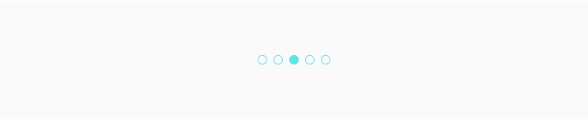
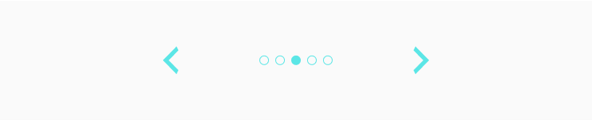

Slider Controllers
Slider Controller это функциональный элемент индикации и переключения картинок или любой другой информации в слайдере. Это компонент мы используем в slider.
Структура компонента
Контроллер состоит из кнопок переключения и коллекции из meatballs.
Meat Ball
MeatBall — это точки индикатора выбранного или показанного элемента. Проще говоря они указывают на то, какая картинка или любой другой элемент в скроллируемой области показан, также демонстрирует их количество. Подробнее о meatball.
Состояния у этого компонента есть только у meatballs, они меняют свой фон в зависимости от того, какой элемент slider показывается в данный момент. 
Реализация
Собираем в одну структуру необходимые элементы. В качестве кнопок переключения выступают иконки стрелок meatballs также собираем в коллекцию.
import React from 'react'
import Q_MeatBall from '../../quarks/Q_MeatBall/Q_MeatBall.jsx'
import './M_SliderControllers.scss'
export default class M_SliderControllers extends React.Component {
constructor(props) {
super(props)
}
render() {
const { handleChangeIndex, imageUrls, activeIndex } = this.props
return (
<div className="M_SliderController">
<div
className="Q_Icon arrow-left"
onClick={() => handleChangeIndex(activeIndex - 1)}
></div>
<div className="С_MeatBalls">
{imageUrls.map((img, index) => (
<Q_MeatBall key={index} selected={index === activeIndex} />
))}
</div>
<div>
className="Q_Icon arrow-right"
onClick={() => handleChangeIndex(activeIndex + 1)}
></div>
</div>
)
}
}Назначаем размеры иконок и положение элементов.
.M_SliderController {
width: 400px;
display: flex;
justify-content: space-between;
margin: 20px auto;
align-items: center;
}
.M_SliderController .С_MeatBalls {
display: flex;
}
.M_SliderController .Q_Icon {
width: 35px;
height: 35px;
}
Получаем следующий результат. Так как этот компонент не является самостоятельным, полную его функциональность и взаимодействие с картинками в слайдере сотри в этом туториле slider.
Ссылки
Также для тебя ссылки на Figma с дизайн системой и GitHub с библиотекой компонентов.
Составляющие
Этот компонент часто выводится в следующих компонентах.
В этот компонент часто выводятся следующие компоненты.